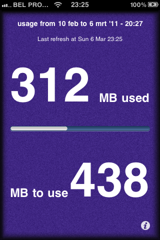
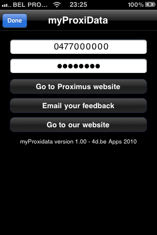

myProxiData
Not in the store. Since Belgacom/Proximus changed the login and information pages to quickly in a row. I have decided to discontinue further development
An app i created for learning and out of frustration that Proximus didn’t had one ( now they do ). All you need is a Private Proximus data account and login credentials.
 
Open Source Libraries used :
before conversion to CoreData